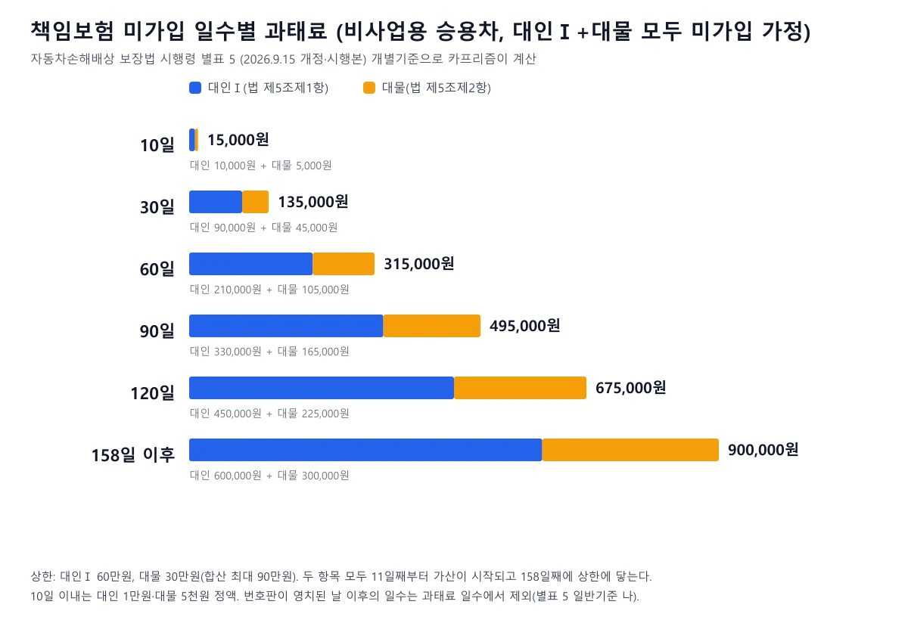
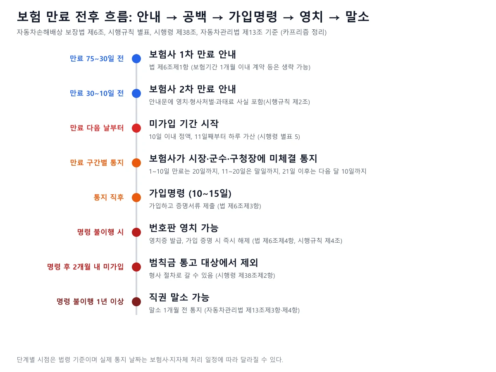
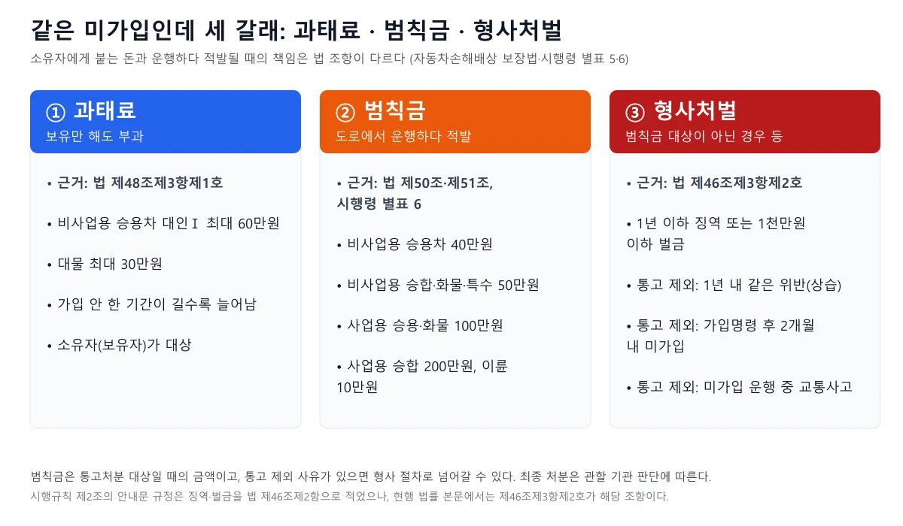
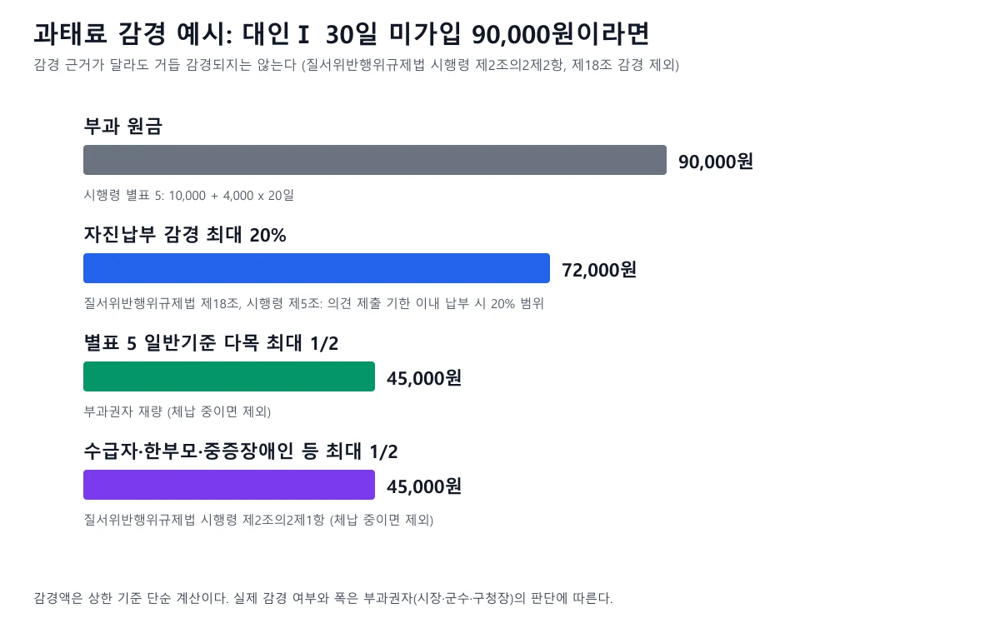
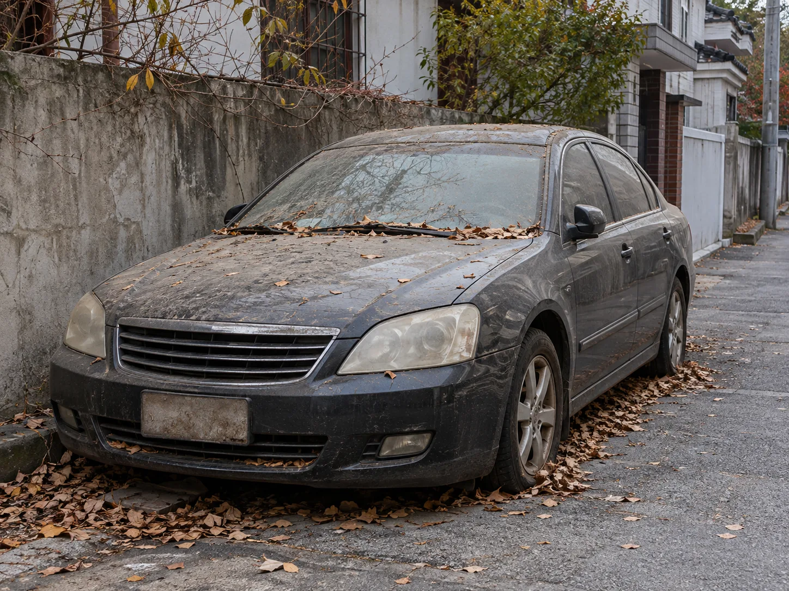
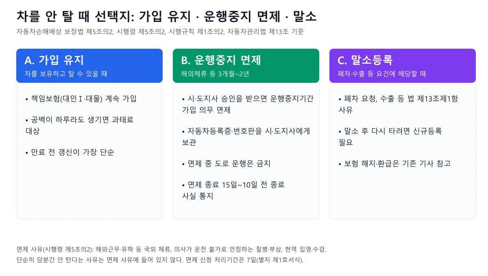

▲ 보험 만료 사실을 뒤늦게 알게 되는 장면을 가정한 예시 이미지. 의무보험에 가입하지 않은 자동차는 도로에서 운행해서는 안 된다(법 제8조) ⓒ 카프리즘 제작 AI 생성 예시 이미지(실제 차량·장소·인물 아님)
"보험이 어제 끝났는데 이번 주말에 갱신해도 되겠지?" 이런 생각이 드는 순간이 가장 위험하다. 이 글은 2026년 10월 10일 기준으로 국가법령정보센터 Open API에서 자동차손해배상 보장법(시행 2026.10.2)·시행령(시행 2026.9.15, 별표 5 개정본)·시행규칙(시행 2026.9.10)과 자동차관리법, 질서위반행위규제법·시행령 원문을 직접 내려받아 조문을 대조했다. 공식 조회 서비스는 자동차365와 보험개발원 안내 페이지를 열어 확인했다. 확인하지 못한 항목은 "확인하지 못했다"로 적었고, 처분의 최종 결과는 관할 시·군·구와 수사기관의 판단에 따라 달라지므로 단정하지 않는다. 이 글의 초점은 "보험이 끊긴 뒤 며칠째에 무슨 일이 생기는가"이고, 차를 팔거나 폐차하면서 생기는 해지·환급은 양도·폐차 때 보험 해지와 환급금 기사, 가해 차량이 무보험이거나 도주했을 때 피해자가 받는 보상은 정부보장사업 기사에서 다뤘다.
1. 만료 다음 날부터 — 며칠째에 무슨 일이 생기나
과태료는 "한참 지나서" 붙는 것이 아니라 공백이 생긴 순간부터 계산되는 구조다. 시행령 별표 5의 개별기준은 미가입 기간이 10일 이내이면 정액(비사업용 대인Ⅰ 1만 원), 10일을 넘으면 그 정액에 11일째부터 하루 단위로 더한 금액으로 정한다. 즉 하루만 비어도 "10일 이내" 정액 구간에 들어간다. 다만 이는 부과 기준일 뿐이고, 실제 부과는 보험사가 미체결 사실을 지자체에 통지하고 지자체가 사전통지·의견제출 절차를 거친 뒤 이뤄진다(질서위반행위규제법 제16조·제17조). 통지·가입명령이 늦어졌다고 해서 의무가 없어지는 것은 아니며, 과태료 부과의 제척기간은 질서위반행위가 끝난 날부터 5년이다(같은 법 제19조).
| 구분 | 근거 | 내용 |
|---|---|---|
| 보험 만료 직후 | 법 제5조, 제8조 | 의무보험에 가입되어 있지 않은 자동차는 도로에서 운행해서는 안 된다. 보유자는 책임보험(대인Ⅰ)과 대물보험에 모두 가입해야 한다 |
| 미가입 일수 계산 | 시행령 별표 5 | 10일 이내 정액, 11일째부터 하루 가산. 번호판이 영치된 날 이후의 일수는 과태료 일수에서 제외 |
| 보험사 통지 | 법 제6조제2항제3호, 시행규칙 별표 | 만료일이 1~10일이면 같은 달 20일까지, 11~20일이면 같은 달 말일까지, 21일~말일이면 다음 달 10일까지 보험사가 시장·군수·구청장에게 알린다 |
| 가입명령 | 법 제6조제3항 | 통지를 받은 지자체는 10일 이상 15일 이하 기간을 정해 가입하고 증명서류를 내라고 명한다 |
| 번호판 영치 | 법 제6조제4항, 시행규칙 제4조 | 의무보험 미가입 자동차의 번호판을 영치할 수 있다. 가입을 증명하면 즉시 해제하고 등록기관에 알린다 |
📍 "하루도 안 되는 공백"은 확인하지 못했다
보험기간 마지막 날 몇 시에 효력이 끝나고 새 계약이 몇 시부터 시작하는지는 보험사 약관과 증권에 적힌 책임개시·종료 시각에 따른다. 이 부분의 약관 조항은 이번 조사에서 열어 보지 못했다. 시각 단위 공백이 과태료 계산에서 하루로 잡히는지도 법령 원문에서 확인하지 못했다. 강동구청이 만기일이 주말·공휴일이면 만기 이전에 미리 재가입하라고 안내한 것은 이런 공백을 피하라는 뜻으로 읽힌다. 강동구청 안내 바로가기
2. 갱신 안내는 언제 오나 — 75일 전, 30일 전, 그리고 직접 챙겨야 할 날
법은 보험사에 두 번의 안내 의무를 지운다. 법 제6조제1항은 계약 종료일 75일 전부터 30일 전까지의 기간, 30일 전부터 10일 전까지의 기간에 각각 계약이 끝난다는 사실을 알리라고 정한다. 보험기간이 1개월 이내인 계약이거나 자동차보유자가 이미 같은 보험사와 다시 계약했거나 다른 보험사와 새 계약을 맺은 사실을 안 경우에는 안내를 생략할 수 있다. 안내하지 않은 보험사에는 시행령 별표 5에 따라 각 50만 원의 과태료가 규정돼 있다. 시행규칙 제2조는 이 안내에 번호판이 영치될 수 있다는 사실, 미가입 운행 때의 징역·벌금, 미가입 기간에 따른 300만 원 이하 과태료 사실이 포함돼야 한다고 정한다.
그렇다고 안내를 못 받았다는 이유로 과태료 의무가 사라지는 것은 아니다. 문자·이메일을 받는 번호와 주소가 옛 정보이거나, 다이렉트로 가입해 안내를 무시했거나, 이사로 우편이 전달되지 않는 경우가 현실에서 흔하다. 안내 시기와 직접 챙길 날짜를 한 번에 정리하면 아래와 같다.
| 시점 | 누가·무엇을 | 근거·비고 |
|---|---|---|
| 만료 75~30일 전 | 보험사가 1차 만료 안내 | 법 제6조제1항 |
| 만료 30~10일 전 | 보험사가 2차 만료 안내 | 법 제6조제1항 |
| 만료 30일 전~5영업일 전 | 보험개발원 내 차보험 찾기 갱신 신청 가능 기간 | 개인용 자가용 승용차·개인 소유 업무용 소형차 대상. 보험사 회신은 신청일로부터 2영업일 이내 |
| 만료 며칠 전 주말·공휴일이 낀다면 | 소유자가 만기 이전에 재가입 | 강동구청 안내 |
| 만료일 | 소유자가 새 계약 책임개시 시각 확인 | 증권·가입증명서의 시각 확인(약관은 확인하지 못했다) |
보험개발원 내 차보험 찾기 서비스는 가입 가능한 보험사를 연결해 주는 서비스이고, 신청 대상은 개인용 자가용 승용차와 개인 소유 업무용 소형차에 한한다. 이 서비스로 가입 가능한 보험사를 찾지 못하면 공동인수제도를 이용해 주요 손해보험사에 직접 문의할 수 있다고 안내한다. 사고 이력이나 보험료 연체로 보험사가 가입을 꺼리는 경우를 대비해 만기까지 시간 여유가 있을 때 움직이라는 뜻이다. 할인·할증 등급이 갱신 보험료에 어떻게 반영되는지는 자동차보험 할인할증 제도 기사, 마일리지·특약 갱신 시 챙길 점은 마일리지 특약 환급 기사를 참고하자. 내 차보험 찾기 안내 바로가기
▲ 가입 자체는 온라인으로도 가능한 경우가 많지만 책임개시 시점(몇 시부터 효력이 생기는지)은 반드시 가입증명서로 확인하자(예시 이미지) ⓒ 카프리즘 제작 AI 생성 예시 이미지(실제 차량·장소·인물 아님)
3. 미가입 기간별 과태료 — 하루 가산 구조와 상한을 한 번에
비사업용 승용차 기준으로 대인Ⅰ은 10일 이내 1만 원에 11일째부터 하루 4천 원, 대물은 10일 이내 5천 원에 11일째부터 하루 2천 원을 더하며, 상한은 각각 60만 원과 30만 원이다. 이 금액은 시행령 별표 5(2026.9.15 개정·시행본) 개별기준 가목·나목에서 직접 확인했다. 같은 공백을 두고 과태료 표는 이전 기사에서도 다뤘기 때문에, 이 글에서는 계산 방식과 일수별 결과를 좀 더 촘촘히 보여 준다.

▲ 10일 이내 15,000원에서 158일 이후 900,000원 상한까지, 비사업용 승용차가 대인Ⅰ·대물 모두 미가입일 때의 과태료 ⓒ 카프리즘 제작 도표 (시행령 별표 5 기준 계산)
| 구분 | 10일 이내 | 11일째부터 하루 가산 | 총액 상한(1대당) |
|---|---|---|---|
| 비사업용 · 대인Ⅰ(제5조제1항) | 1만 원 | 4천 원 | 60만 원 |
| 비사업용 · 대물(제5조제2항) | 5천 원 | 2천 원 | 30만 원 |
| 사업용 · 대인Ⅰ(제5조제1항) | 3만 원 | 8천 원 | 100만 원 |
| 사업용 · 대물(제5조제2항) | 5천 원 | 2천 원 | 30만 원 |
| 이륜자동차 · 대인Ⅰ | 6천 원 | 1천200원 | 20만 원 |
| 이륜자동차 · 대물 | 3천 원 | 6백 원 | 10만 원 |
| 사업용 · 법 제5조제3항 보험(추가 대인) | 3만 원 | 8천 원 | 100만 원 |
계산식은 단순하다. 비사업용 대인Ⅰ 과태료 = 10,000원 + 4,000원 × (미가입일수 − 10), 대물은 5,000원 + 2,000원 × (미가입일수 − 10)이다. 예를 들어 45일 동안 두 보험 모두 들지 않았다면 대인Ⅰ은 10,000 + 4,000 × 35 = 150,000원, 대물은 5,000 + 2,000 × 35 = 75,000원, 합쳐 225,000원이다. 상한은 대인Ⅰ이 10,000 + 4,000 × 148 = 602,000원이 되는 158일째, 대물이 5,000 + 2,000 × 148 = 301,000원이 되는 158일째에 닿는다.
| 미가입 일수 | 대인Ⅰ | 대물 | 합계 |
|---|---|---|---|
| 10일 이내 | 10,000원 | 5,000원 | 15,000원 |
| 11일 | 14,000원 | 7,000원 | 21,000원 |
| 30일 | 90,000원 | 45,000원 | 135,000원 |
| 60일 | 210,000원 | 105,000원 | 315,000원 |
| 90일 | 330,000원 | 165,000원 | 495,000원 |
| 120일 | 450,000원 | 225,000원 | 675,000원 |
| 158일 이후 | 600,000원(상한) | 300,000원(상한) | 900,000원(상한) |
계산 예시 2, 영치가 낀 경우: 만료 후 60일째에 번호판이 영치됐다면 별표 5 일반기준 나목에 따라 영치된 날 이후의 일수는 빠지므로 일수는 60일에서 멈춘다. 비사업용 승용차가 대인Ⅰ·대물 모두 미가입이었다면 대인Ⅰ 210,000원 + 대물 105,000원 = 315,000원이 기준액이다(카프리즘 계산). 영치를 풀기 위해 보험에 가입해도 이미 지난 60일분의 기준액이 사라지는 것은 아니다.
📍 부과권자는 금액을 늘릴 수도 줄일 수도 있다
별표 5 일반기준 라목은 위반의 내용·정도가 중대해 피해자 등에게 미치는 피해가 크다고 인정되는 경우 등에 과태료 금액의 2분의 1 범위에서 늘릴 수 있다고 정하되, 법 제48조제3항의 상한(300만 원)을 넘을 수 없다고 한다. 또 위반행위 횟수는 최근 1년간 같은 위반행위로 과태료처분을 받은 경우에 적용한다는 일반기준 가목도 있다. 이 글의 표는 기준 금액이며 실제 처분액은 부과권자의 판단에 따라 달라질 수 있다. 시행령 별표 5 바로가기
4. 과태료만 내면 끝일까 — 가입명령, 영치, 말소로 이어지는 순서
미가입이 길어지면 돈 문제를 넘어 번호판과 등록까지 영향이 간다. 법 제6조제3항은 통지를 받은 시장·군수·구청장이 10일 이상 15일 이하 기간을 정해 가입하고 증명서류를 제출하라고 명령해야 한다고 정한다. 명령을 이행하지 않으면 같은 조 제4항에 따라 번호판을 영치할 수 있고, 필요하면 경찰서장에게 협조를 요청할 수 있다. 영치되면 영치증을 받고, 가입을 증명하면 즉시 해제된다(시행규칙 제4조). 영치 기간 중에는 별표 5 일반기준 나목에 따라 영치일 이후 일수가 과태료 일수 계산에서 빠진다.

▲ 안내 두 번, 공백, 보험사 통지, 가입명령, 영치, 형사 절차 가능, 직권 말소 순으로 이어진다 ⓒ 카프리즘 제작 도표 (법·시행규칙·시행령·자동차관리법 기준)
더 오래 방치하면 자동차관리법 제13조제3항제6호가 적용될 수 있다. 시·도지사는 의무보험 가입명령을 이행하지 않은 지 1년 이상 경과한 자동차를 직권으로 말소등록할 수 있고, 말소 예정일 1개월 전까지 소유자 등에게 사유와 예정일을 알려야 한다(같은 조 제4항). 말소된 자동차를 다시 등록하려면 신규등록을 해야 한다(제10항). "보험을 안 들고 두면 어차피 폐차되겠지"라는 생각은 위험하다. 직권 말소는 소유자가 원해서 하는 폐차가 아니라 행정청이 등록을 지우는 것이어서, 말소 전까지 쌓인 과태료는 별도로 남을 수 있다(카프리즘 해석이며 구체적 처리는 관할 기관에 확인해야 한다).
납부기한을 넘긴 과태료에는 가산금이 붙는다. 질서위반행위규제법 제24조는 체납 과태료에 100분의 3의 가산금을 더하고, 납부기한이 지난 날부터 매 1개월이 지날 때마다 1천분의 12의 중가산금을 더한다고 정한다. 중가산금을 더하는 기간은 60개월을 넘지 못한다(같은 조 제2항). 체납이 이어지면 번호판 영치·압류로 이어지는 흐름은 과태료 체납 후 영치·압류·분할납부 기사에 정리했다.
5. 운행하다 걸리면 — 과태료와 범칙금, 형사처벌은 다른 길이다
미가입 상태로 도로에서 운행한 보유자는 법 제46조제3항제2호에 따라 1년 이하의 징역 또는 1천만 원 이하의 벌금 대상이다. 과태료는 "보험에 들지 않은 보유자"에게, 형사책임은 "미가입 차를 운행한 사람"에게 각각 붙는 별개의 책임이다. 다만 법은 형사 절차를 줄이는 특례도 마련했다. 제9장의 통고처분 제도에 따라 사법경찰관이나 시장·군수·구청장이 범칙자에게 범칙금을 낼 것을 통고할 수 있고, 범칙금을 내면 같은 행위로 다시 벌 받지 않는다(제51조, 제53조).

▲ 소유자에게 붙는 과태료와, 도로에서 운행하다 적발될 때의 범칙금·형사처벌은 조문이 다르다 ⓒ 카프리즘 제작 도표 (시행령 별표 5·6, 법 제46조·제48조)
| 구분 | 승용자동차 | 승합자동차 | 화물·특수자동차·건설기계 |
|---|---|---|---|
| 사업용 자동차 | 100 | 200 | 100 |
| 비사업용 자동차 | 40 | 50 | 50 |
| 이륜자동차 | 10 | ||
범칙금 통고 대상에서 빠지는 경우가 중요하다. 법 제50조제1항은 미가입 운행 중 교통사고를 일으킨 경우를 범칙행위에서 제외하고, 시행령 제38조제1항은 범칙행위를 한 날부터 1년 이내에 같은 위반을 한 사람을 "상습"으로 보며, 제2항은 가입명령을 받고 2개월 이내에 가입하지 않은 사람과 미가입 운행 중 교통사고를 낸 사람을 범칙자에서 제외하라고 정한다. 그렇게 되면 범칙금 통고가 아니라 형사 절차로 넘어갈 수 있다. 차량 운행 전 반드시 가입증명서를 확인해야 하는 이유다. 범칙금은 분할 납부가 안 되고(시행령 제37조제2항), 납부통고서를 받은 날부터 10일 이내에 내야 한다. 그 기간에 내지 않거나 기간 안에 이의를 제기하면 사법경찰관 등이 사건을 검찰로 송치하게 된다(법 제52조, 제53조제2항).
사고를 냈다면 — 정부보장사업과 구상
무보험 차량에 피해를 입은 사람은 법 제30조제1항제2호에 따라 "보험가입자등이 아닌 자가 제3조에 따라 손해배상의 책임을 지게 되는 경우" 정부에 책임보험 보험금 한도에서 피해를 보상해 달라고 청구할 수 있다. 정부는 보상한 금액의 한도에서 책임이 있는 가해자에 대한 피해자의 손해배상 청구권을 대위행사할 수 있다(법 제39조제1항). 피해자 입장의 신청 절차·한도·서류는 정부보장사업 기사가 다루므로 여기서는 반복하지 않는다. 가해자 쪽에서 기억할 점은 정부가 대신 보상해 주더라도 책임이 사라지지 않고 정부의 구상 청구, 형사처벌, 과태료가 따로 남는다는 것이다. 사고 직후 현장에서 챙겨야 할 것은 뺑소니·접촉사고 초동 대응 기사에 정리했다.
| 당사자 | 무엇이 따르나 | 근거 |
|---|---|---|
| 피해자 | 정부에 책임보험 한도 안에서 보상 청구 가능 | 법 제30조제1항제2호 |
| 정부 | 보상한 금액 한도에서 가해자에게 청구(대위행사) | 법 제39조제1항 |
| 가해 운전자·보유자 | 1년 이하 징역 또는 1천만 원 이하 벌금, 범칙금 통고 대상 제외 | 법 제46조제3항제2호, 제50조제1항, 시행령 제38조제2항 |
| 보유자 | 미가입 기간에 따른 과태료 | 법 제48조제3항제1호, 시행령 별표 5 |
6. 안내를 놓쳤다는 걸 알았을 때 — 가입 확인부터 과태료 감경까지
순서는 "가입 먼저, 증명 다음, 과태료는 그다음"이다. 일단 보험이 살아 있는지부터 확인한다. 국토교통부가 운영하는 자동차365의 메뉴는 전체메뉴 > 자동차라이프 > 자동차보험 > 자동차 보험가입확인으로 안내돼 있다(로그인 필요 여부와 본인인증 방식은 열람한 페이지에서 확인하지 못했다). 보험개발원 내 차보험 찾기는 만기일 조회 서비스가 아니라 갱신·신규 가입을 도와주는 서비스이고, 금융감독원 내보험 찾아줌은 생명·손해보험 가입내역과 미청구 보험금을 조회하는 서비스인데 자동차보험이 포함되는지는 페이지에 명시돼 있지 않았다. 확실한 방법은 보험사 앱이나 고객센터에서 증권번호와 책임개시·종료 시각을 직접 확인하는 것이다. 자동차365 바로가기
✅ 갱신을 놓쳤다면 이 순서로
· 1단계, 운행 중지: 가입 전까지는 도로에서 운행하지 않는다. 운행하면 형사처벌 대상이 된다(법 제46조제3항제2호)
· 2단계, 책임보험·대물 동시 가입: 대인Ⅰ과 대물이 함께 포함됐는지 확인한다(법 제5조제1항·제2항)
· 3단계, 책임개시 시각 확인: 가입증명서나 증권에서 책임개시 시각을 확인한다
· 4단계, 가입 증명: 지자체 가입명령을 받았다면 기한(10~15일) 안에 증명서류를 제출한다
· 5단계, 번호판 영치 여부 확인: 영치됐다면 가입 증명으로 즉시 해제를 요청한다(시행규칙 제4조)
· 6단계, 과태료 사전통지 확인: 의견 제출 기한 안에 자진납부 감경, 소명, 이의제기 여부를 정한다
· 7단계, 재발 방지: 안내 문자 수신 번호·이메일을 최신으로 바꾸고, 만기 30일 전 일정 알림을 직접 건다(카프리즘 권고)
과태료를 줄이는 방법은 세 가지
과태료 사전통지서를 받으면 질서위반행위규제법 제16조에 따라 의견 제출 기한이 정해진다. 그 기한 안에 자진납부하면 부과될 과태료의 100분의 20 범위에서 감경할 수 있다(같은 법 제18조, 시행령 제5조). 감경된 과태료를 납부하면 해당 위반에 대한 부과·징수 절차는 끝난다(제18조제2항). 한편 시행령 제2조의2제1항은 국민기초생활 보장법상 수급자, 한부모가족 보호대상자, 심한 장애인, 국가유공자 1~3급 상이등급자, 미성년자 등에 대해 과태료의 100분의 50 범위에서 감경할 수 있다고 정한다. 자동차손해배상 보장법 시행령 별표 5 일반기준 다목도 같은 사유나 위반의 정도·동기·결과를 고려해 2분의 1 범위에서 줄일 수 있다고 정한다. 어느 쪽이든 과태료를 체납하고 있는 사람은 제외된다. 법령상 감경 사유가 여럿이어도 제18조에 따른 감경을 제외하고는 거듭 감경할 수 없다(시행령 제2조의2제2항).

▲ 대인Ⅰ 30일 미가입 90,000원 예시. 자진납부 20% 감경은 72,000원, 별표 5·시행령 제2조의2의 최대 1/2 감경은 45,000원까지다 ⓒ 카프리즘 제작 도표 (감경액은 상한 기준 단순 계산)
불복하려면 과태료 부과 통지를 받은 날부터 60일 이내에 해당 행정청에 서면으로 이의제기를 해야 하고, 이의제기가 있으면 행정청의 과태료 부과처분은 효력을 잃는다(질서위반행위규제법 제20조제1항·제2항). 이후 행정청은 14일 안에 의견과 증빙서류를 첨부해 관할 법원에 통보하고(제21조제1항), 법원 절차로 넘어간다. 이의제기의 실제 인용 가능성은 사정에 따라 다르며, "안내를 못 받았다"는 사정만으로 감경·취소가 된다고 보장할 수는 없다. 감경과 이의제기는 양자택일이 아니라 순서가 있다. 감경된 과태료를 납부하면 이의제기를 할 수 없게 되므로(질서위반행위규제법 시행령 제3조제1항제5호의2) 소명할 사정이 있다면 납부 전에 판단해야 한다. 질서위반행위규제법 바로가기
7. 차를 안 탈 때 — 가입 유지, 운행중지 면제, 말소 중 무엇을 고를까
"당분간 안 타니까 보험을 끊겠다"는 선택지는 등록이 살아 있는 한 없다. 의무보험 가입 의무는 등록된 자동차의 보유자에게 지속되기 때문이다. 강동구청도 소유권 이전이나 말소 전까지 보험을 계속 유지해야 하며 소유자가 사망해 상속인이 정해지지 않은 경우에도 같은 의무가 적용된다고 안내한다. 차를 안 탈 때 쓸 수 있는 방법은 세 가지다.

▲ 오래 안 타는 차도 등록이 살아 있는 한 의무보험 가입 의무가 계속된다. 면제나 말소 없이 비워 두면 과태료가 쌓인다(예시 이미지, 번호판 식별 불가) ⓒ 카프리즘 제작 AI 생성 예시 이미지(실제 차량·장소·인물 아님)

▲ 차를 당분간 안 탈 때의 세 갈래. 면제는 해외체류·질병·입영 등 시행령이 정한 사유가 있어야 한다 ⓒ 카프리즘 제작 도표 (법 제5조의2, 시행령 제5조의2, 자동차관리법 제13조)
B. 운행중지 면제는 법 제5조의2가 근거다. 자동차보유자는 해외체류 등으로 3개월 이상 2년 이하의 범위에서 운행할 수 없는 경우로서 대통령령이 정하는 경우에 시·도지사 승인을 받아 그 운행중지기간에 한해 가입 의무를 면제받을 수 있다. 대통령령이 정한 사유는 시행령 제5조의2에 따라 ① 해외근무·해외유학 등으로 국외에 체류하게 되는 경우, ② 질병이나 부상 등으로 의사가 운전이 불가능하다고 인정하는 경우, ③ 현역(상근예비역 제외) 입영 또는 교도소·구치소 수감이다. 승인을 받으면 자동차등록증과 번호판을 시·도지사에게 보관해야 하고(법 제5조의2제1항), 면제 기간 중에는 해당 자동차를 도로에서 운행해서는 안 된다(제2항). 이를 어기고 운행하면 법 제46조제3항제1호에 따라 1년 이하 징역 또는 1천만 원 이하 벌금 대상이다.
| 단계 | 내용 | 근거 |
|---|---|---|
| 신청 | 보험등 가입 의무의 면제 신청서에 면제 사유·운행중지기간 증명서류와 자동차등록증 사본을 붙여 자동차 등록 관할 기관에 제출 | 시행규칙 제1조의2제1항, 별지 제1호서식(처리기간 7일) |
| 심사·보관 | 면제 사유 해당 여부와 운행중지기간이 적절한지 심사하고, 승인 시 등록증·번호판을 보관한 뒤 보관 확인서 발급 | 시행규칙 제1조의2제2항·제3항 |
| 승인 취소 | 소유자가 취소를 요청하면 승인을 취소하고 등록증·번호판 반환 | 시행규칙 제1조의2제4항 |
| 종료 안내 | 면제 종료 15일 전부터 10일 전까지 종료 사실 안내, 종료·취소 시 보험 가입 여부 확인 | 시행규칙 제1조의2제5항·제6항 |
| 보험계약 유예 | 보험사가 번호판 보관 확인서를 첨부한 신청을 받아 잔여 계약기간을 운행중지기간 내에서 유예할 수 있다 | 법 제5조의2제3항, 시행규칙 제1조의3(약관에 따름) |
계약기간 유예는 "할 수 있다"는 규정이어서 모든 보험사가 같은 방식으로 받아 주는지, 환급과 어떻게 다른지, 마일리지·특약이 어떻게 정산되는지는 확인하지 못했다. 신청 전에 보험사에 직접 물어야 한다. 또 한 가지, 법 제5조제4항과 시행령 제5조가 정한 가입 의무 없는 자동차(주한 국제연합군·미합중국군 보유 차량, 피견인자동차 등)와 시행령 제5조의2의 면제 사유는 한정돼 있어 일반적인 "한동안 주차해 둠"은 여기에 들어가지 않는다.
C. 말소등록은 자동차관리법 제13조제1항이 정한 사유가 있을 때 한다. 대표적으로 자동차해체재활용업자에게 폐차를 요청한 경우, 자동차를 수출하는 경우, 천재지변·교통사고·화재로 자동차 본래의 기능을 회복할 수 없게 되거나 멸실된 경우 등이다. 말소등록된 자동차를 다시 타려면 신규등록을 해야 하므로(제13조제10항) 단순히 쉬는 용도로 쓰기는 어렵다. 말소·폐차 때 보험 해지와 환급 계산은 보험 해지·환급 기사가 자세하다. 등록 없이 굴러다니는 차의 위험은 대포차 위험 기사를 참고하자.
8. 자주 하는 오해 — 한눈에 정리
| 흔한 말 | 확인된 사실 |
|---|---|
| "보험사가 안내를 안 줬으니 과태료는 없다" | 보험사의 안내 의무는 법 제6조제1항에 있지만, 가입 의무와 과태료 근거(법 제5조, 제48조제3항제1호)는 별개다. 안내 누락은 보험사에 대한 별도 과태료 사유다 |
| "10일 안에만 가입하면 과태료가 없다" | 10일 이내도 정액 과태료 구간이다(비사업용 대인Ⅰ 1만 원, 대물 5천 원). 가산이 11일째부터 시작될 뿐이다 |
| "늦게라도 가입하면 그동안의 과태료도 없어진다" | 부과기준은 '가입하지 않은 기간'의 일수로 정해져 있다. 가입으로 그 이후 일수가 늘지 않을 뿐, 이미 지난 기간의 위반이 지워진다는 규정은 이번에 확인하지 못했다(카프리즘 해석, 관할 지자체 확인 필요) |
| "과태료는 안 내고 버텨도 5년 지나면 끝이다" | 5년은 부과를 할 수 있는 제척기간(질서위반행위규제법 제19조)이다. 이미 부과된 과태료를 체납하면 가산금이 붙고 체납처분 대상이 된다(제24조) |
| "안 몰면 괜찮다" | 과태료는 보유 상태만으로 부과된다. 운행은 별도의 형사처벌·범칙금 대상이다 |
| "사고만 안 내면 범칙금으로 끝난다" | 가입명령 후 2개월 이내 미가입이거나 1년 안 재위반이면 범칙자에서 제외돼 형사 절차로 갈 수 있다 |
| "과태료는 최고 300만 원이다" | 300만 원은 법 제48조제3항의 상한이다. 시행령 별표 5의 승용차 대인Ⅰ+대물 합산 상한은 90만 원, 사업용은 더 높다 |
| "영치되면 과태료도 멈춘다" | 영치된 날 이후의 일수는 일수 계산에서 제외되지만 그 전 일수의 과태료는 남는다(별표 5 일반기준 나) |
| "안 타는 차는 보험이 필요 없다" | 면제는 시행령 사유(해외체류·질병·입영 등)와 시·도지사 승인이 필요하다. 그렇지 않으면 가입이 유지돼야 한다 |
9. 요약
책임보험이 끊기는 순간부터 과태료 계산이 시작된다. 시행령 별표 5 기준 비사업용 승용차는 대인Ⅰ 10일 이내 1만 원, 11일째부터 하루 4천 원씩 가산해 최대 60만 원, 대물 10일 이내 5천 원에 하루 2천 원씩 가산해 최대 30만 원이다. 두 항목 모두 미가입이면 45일째 22만 5천 원, 158일째부터 상한 90만 원이다. 보험사는 만료 75~30일 전과 30~10일 전에 두 번 안내해야 하지만, 못 받았다고 의무가 사라지지는 않는다.
운행하면 별개의 책임이 붙는다. 미가입 운행은 1년 이하 징역 또는 1천만 원 이하 벌금 대상이고, 범칙금 통고 대상이면 비사업용 승용차 40만 원이다. 사고를 냈거나 가입명령 후 2개월 안에 가입하지 않았다면 범칙자에서 제외된다. 가입명령(10~15일)을 어기면 번호판 영치, 1년 이상이면 직권 말소가 가능하다. 의견 제출 기한 안에 자진납부하면 20% 범위 감경이 가능하고, 불복은 통지 후 60일 안에 서면으로 이의제기를 해야 한다. 안 탈 때는 해외체류·질병·입영 등 사유로 시·도지사 승인을 받는 운행중지 면제, 폐차 등 사유가 있는 말소등록, 그리고 가입 유지가 선택지다. 확인하지 못한 항목은 보험 책임개시·종료 시각 약관, 계약기간 유예의 보험사별 처리, 자동차365 조회의 인증 방식, 내보험 찾아줌의 자동차보험 포함 여부다.